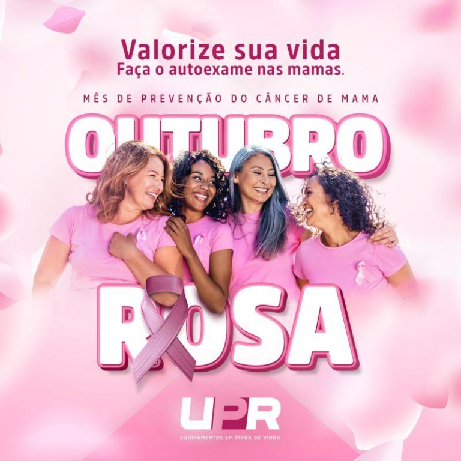
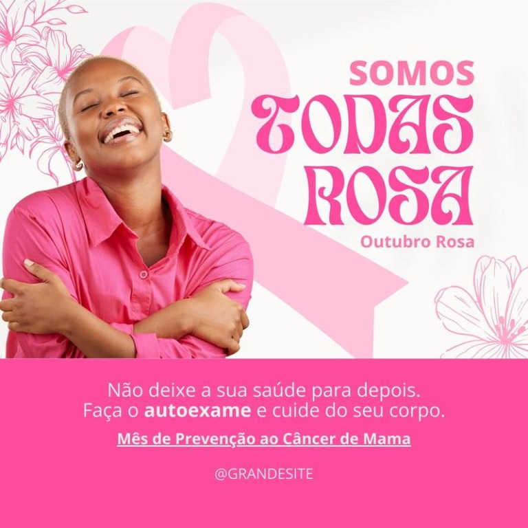
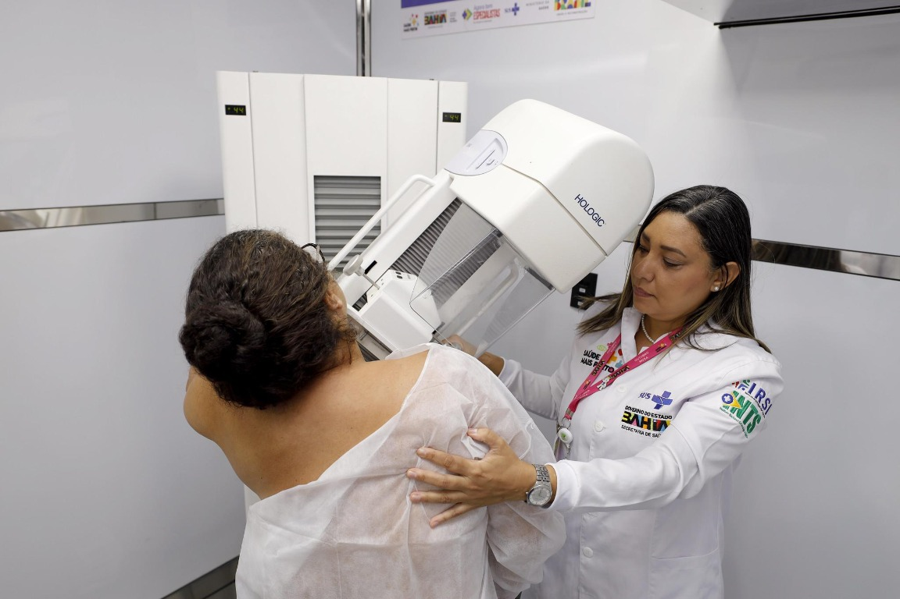

novos casos em mulheres foram estimados no mundo pela OMS em 2024.
ROSA
CAMPANHA DE CONSCIENTIZAÇÃO
Informação que
transforma.
Um espaço para entender o Outubro Rosa, conhecer formas de prevenção e saber quando procurar orientação profissional.
01Informação02Prevenção03Cuidado

2026
01 — O MOVIMENTO
Outubro Rosa
é sobre cuidado.

Uma campanha pode ser o começo de uma conversa importante.
O Outubro Rosa é um movimento de conscientização sobre a saúde das mamas e o câncer de mama. A campanha incentiva informação de qualidade, atenção às mudanças no corpo e acesso oportuno à avaliação e ao tratamento.
Entenda os sinais ↗02 — DADOS QUE AJUDAM A ENTENDER
Informação com
contexto e fonte.
Estimativas mundiais da Organização Mundial da Saúde para 2024 — não são números exclusivos do Brasil.
mortes estimadas globalmente. Detecção oportuna e tratamento adequado são importantes.
dos casos em mulheres ocorrem sem fatores específicos conhecidos além de sexo e idade, segundo a OMS.
03 — PREVENÇÃO
Comece pelo que
você pode fazer.
O cuidado não precisa ser complicado. A informação ajuda você a reconhecer mudanças e saber quando procurar um serviço de saúde.
01OBSERVE
Conheça seu corpo
Perceba o que é habitual para você e fique atento a mudanças novas ou persistentes.
02ACOMPANHE
Tenha acompanhamento
Converse com profissionais de saúde e siga as orientações indicadas para seu perfil.
03CUIDE
Cuide dos hábitos
Hábitos saudáveis fazem parte do cuidado integral com a saúde.
O QUE PODE INFLUENCIAR O RISCO?
Há fatores que podemos mudar — e outros não.
Ter um fator de risco não significa que a pessoa terá câncer. E muitos diagnósticos acontecem sem fator conhecido além de idade e sexo. Informação serve para orientar o cuidado, não para culpar.
Hábitos ao longo da vida
Inatividade física, consumo de bebidas alcoólicas e excesso de peso após a menopausa estão entre fatores associados a maior risco. Hábitos saudáveis beneficiam a saúde, mas não garantem prevenção.
Idade e histórico
Envelhecer aumenta o risco. Histórico pessoal ou familiar e algumas alterações genéticas também podem importar; compartilhe essas informações com a equipe de saúde.
Não existe prevenção total
Nem sempre é possível identificar por que uma pessoa desenvolveu a doença. Fazer tudo “certo” não elimina o risco, e um diagnóstico não é culpa de ninguém.
♡
SEU CORPO
FALA.
FALA.
04 — SINAIS E SINTOMAS
Uma mudança merece
atenção.
Uma alteração não significa necessariamente câncer. Mas uma mudança nova, diferente do habitual ou persistente merece avaliação profissional.
01Caroço ou nóduloUma área endurecida ou diferente.
02Mudanças na pele ou no mamiloAlterações que não eram habituais.
03Alteração no formato ou tamanhoDiferenças percebidas nas mamas.
04Saída de secreção pelo mamiloEspecialmente quando é inesperada.
05Retração ou covinhas na peleUma mudança persistente na aparência da mama.
06Inchaço na mama ou na axilaProcure avaliação se for uma mudança nova.
⚠ Percebeu uma mudança? Procure uma unidade de saúde para avaliação.
Entenda rastreamento e investigação ↓

05 — DETECÇÃO PRECOCE
Rastreamento
e investigação
não são a mesma coisa.
Rastreamento é feito em pessoas sem sintomas; investigação diagnóstica avalia um sinal ou sintoma. São situações diferentes, e a equipe de saúde orienta o caminho apropriado.
Sem sinais ou sintomas
A orientação para mamografia de rastreamento depende da faixa etária, do histórico e das recomendações atuais do SUS. Converse com uma equipe de saúde.
Percebeu uma mudança?
Procure avaliação mesmo que seu último exame tenha sido normal. Não espere o próximo rastreamento para relatar uma alteração.
06 — TRATAMENTO E ACESSO
Informação sobre o SUS
também importa.
O SUS oferece atendimento gratuito: a UBS pode iniciar a avaliação e orientar o encaminhamento para exames e tratamento especializado, quando necessário.
01
Comece pela UBS
Conte à equipe o que percebeu e leve exames anteriores, se tiver. A unidade pode avaliar e orientar o atendimento.
→
02
Faça a investigação
Se necessário, a equipe solicita exames e encaminha para avaliação especializada pela rede do SUS.
→
03
Receba o plano de tratamento
Com diagnóstico confirmado, o serviço especializado explica as opções de tratamento e combina o acompanhamento necessário.
Exame, avaliação e confirmação
O profissional avalia sintomas e histórico. Quando necessário, solicita exames de imagem e biópsia; a confirmação e o tipo do tumor orientam as decisões seguintes.
Plano individualizado
O SUS oferece cuidado oncológico sem cobrança direta ao paciente. As opções podem incluir cirurgia, radioterapia e medicamentos; a equipe define a combinação conforme o tipo e a extensão da doença.
Acompanhamento também é cuidado
Controle de sintomas, reabilitação, apoio psicológico e cuidados paliativos podem integrar o cuidado. Cuidados paliativos podem ser oferecidos junto a outros tratamentos para aliviar sintomas e apoiar qualidade de vida.
A rede e o fluxo de encaminhamento podem variar conforme a região. A UBS, a Secretaria de Saúde local e o serviço especializado podem informar o caminho disponível.
Fonte clínica: OMS — opções de tratamento e cuidado multidisciplinar ↗Quando a principal hipótese médica for neoplasia maligna, a lei prevê prazo máximo de 30 dias para exames diagnósticos necessários, mediante solicitação fundamentada.
Após o diagnóstico firmado em laudo patológico, a lei prevê início do primeiro tratamento no SUS em até 60 dias, ou antes, conforme necessidade terapêutica registrada.
Os prazos legais dependem dos critérios previstos em lei e não substituem a orientação da equipe que acompanha o caso.
Ministério da Saúde ↗
Ministério da Saúde — câncer de mama ↗
Rede de atenção oncológica do SUS ↗
Informações do INCA sobre tratamento ↗
Ouvidoria do SUS — Disque 136 ↗
Lei dos 60 dias — Lei nº 12.732/2012 ↗
Lei dos 30 dias — Lei nº 13.896/2019 ↗
Este site é educativo; em caso de sintomas, procure atendimento e não aguarde uma campanha ou exame de rotina.
07 — FATOS, NOTÍCIAS E FONTES
Informação boa tem
origem e contexto.
Uma orientação de saúde, uma meta internacional e uma notícia são coisas diferentes. Veja quem publicou, quando e a que situação aquela informação se aplica.
Use fontes institucionais e confira o assunto completo.
Informações clínicas deste site são apresentadas como orientação geral e ligadas a páginas da OMS, do Ministério da Saúde ou do INCA. Condutas de rastreamento e tratamento podem mudar; para decisões individuais, converse com a equipe que acompanha você.
Notícia informa o que aconteceu — não substitui uma recomendação clínica.
Uma notícia pode anunciar uma política, serviço, campanha ou mudança com data e local próprios. Confira quando foi publicada, onde se aplica e se existe orientação atualizada do Ministério da Saúde. Reportagens e vídeos antigos podem continuar online sem representar a regra vigente.
Os links direcionam a órgãos oficiais e organizações de saúde. A presença de um link não transforma uma notícia em orientação médica, nem substitui avaliação individual.
08 — VÍDEOS E CONTEÚDOS
Aprenda com
fontes confiáveis.
Vídeos educativos e materiais de instituições de saúde. Alguns são conteúdos de campanhas ou notícias de anos anteriores: assista pelo contexto e confirme orientações atuais nos links oficiais.
VÍDEO EM DESTAQUE · INCA
Câncer de mama: como podemos nos proteger?
Informações sobre prevenção, sinais e detecção precoce, em conteúdo do Instituto Nacional de Câncer.
Assistir no YouTube ↗
HISTÓRIAS REAIS
Prevenção é mais do que uma história de vida
Depoimentos sobre diagnóstico, tratamento e a importância da rede de apoio.
Assistir no YouTube ↗
PODCAST ENSINA AÍ · HU-UFGD/EBSERH
Câncer de mama: o que você precisa saber
Conversa com especialista sobre prevenção, diagnóstico precoce, tratamento e dúvidas comuns.
Assistir no YouTube ↗
TV ASSEMBLEIA · ALMG
Prevenção e tratamento do câncer de mama
Assista ao programa com uma mastologista sobre prevenção, diagnóstico e tratamento.
Abrir vídeo ↗
MITOS E VERDADES · HU-UFGD/EBSERH
Dúvidas respondidas por um mastologista
Leia o material do Hospital Universitário da Grande Dourados.
Ler conteúdo ↗
Os vídeos são incorporados do YouTube. Se algum não carregar, use o link para abrir diretamente na plataforma.
09 — MITOS E VERDADES
Separe o boato
da informação.
Toque em cada afirmação para conferir a resposta. As explicações são curtas, mas cada uma aponta para fontes de saúde confiáveis.
“Se não há câncer na família, não preciso me preocupar.”
Mito. A maioria das mulheres diagnosticadas não tem histórico familiar conhecido. Ausência de casos na família não elimina o risco.Fonte: OMS ↗
“Um nódulo que não dói não precisa ser avaliado.”
Mito. Um nódulo pode não causar dor. Mudanças novas devem ser avaliadas; muitos nódulos são benignos, mas só uma avaliação pode orientar.Fonte: OMS ↗
“Homens também podem ter câncer de mama.”
Verdade. É incomum, mas a OMS estima que cerca de 0,5% a 1% dos casos ocorram em homens. Mudanças também merecem avaliação.Fonte: OMS ↗
“Autoexame mensal substitui mamografia e consulta.”
Mito. Autopercepção ajuda a notar mudanças, mas não substitui exames indicados nem avaliação de saúde. Não é preciso seguir um ritual mensal para conhecer o próprio corpo.Fonte: INCA ↗
“Qualquer alteração na mama significa câncer.”
Mito. Existem diversas causas para alterações e a maioria dos nódulos não é câncer. Procure avaliação em vez de tentar diagnosticar pela aparência ou pela internet.Fonte: OMS ↗
“Hábitos saudáveis reduzem o risco, mas não garantem prevenção.”
Verdade. Atividade física, evitar álcool e manter um peso saudável podem ajudar a reduzir o risco. Não eliminam a possibilidade de adoecer.Fonte: OMS ↗
10 — QUIZ RÁPIDO
Quanto da informação
você já sabe?
Responda a cinco perguntas e descubra o que aprendeu. É educativo: o resultado não avalia sua saúde nem seu risco individual.
5perguntas·1 min
Pergunta 1 de 50 pontos
11 — DÚVIDAS FREQUENTES
Tem dúvida?
Pergunte.
Informação clara ajuda a tornar a conversa sobre saúde mais simples e acolhedora.
É um movimento de conscientização que coloca a saúde das mamas em evidência e incentiva informação, prevenção, diagnóstico e cuidado.
Não necessariamente. Existem diferentes causas para alterações nas mamas. O importante é procurar avaliação profissional quando algo novo ou persistente aparecer.
Não. Observar e conhecer o próprio corpo ajuda a perceber mudanças, mas não substitui os exames indicados nem a avaliação de um profissional de saúde.
A indicação e a periodicidade dependem das recomendações vigentes e do histórico de cada pessoa. Converse com a equipe de saúde para receber orientação individualizada.
Quando perceber uma mudança que não é habitual, especialmente se persistir, procure uma unidade de saúde para orientação.
Sim. O SUS oferece diagnóstico e tratamento sem cobrança ao paciente. A equipe da UBS pode orientar a avaliação e os encaminhamentos para o serviço especializado; as opções de tratamento dependem de cada caso.
A Unidade Básica de Saúde da sua região pode ser uma porta de entrada. Para informações e manifestações sobre serviços do SUS, também existe a Ouvidoria do SUS pelo Disque 136.
UMA MENSAGEM PARA LEVAR
Cuide de você.
Compartilhe informação.
Porque falar sobre saúde também é uma forma de cuidado.